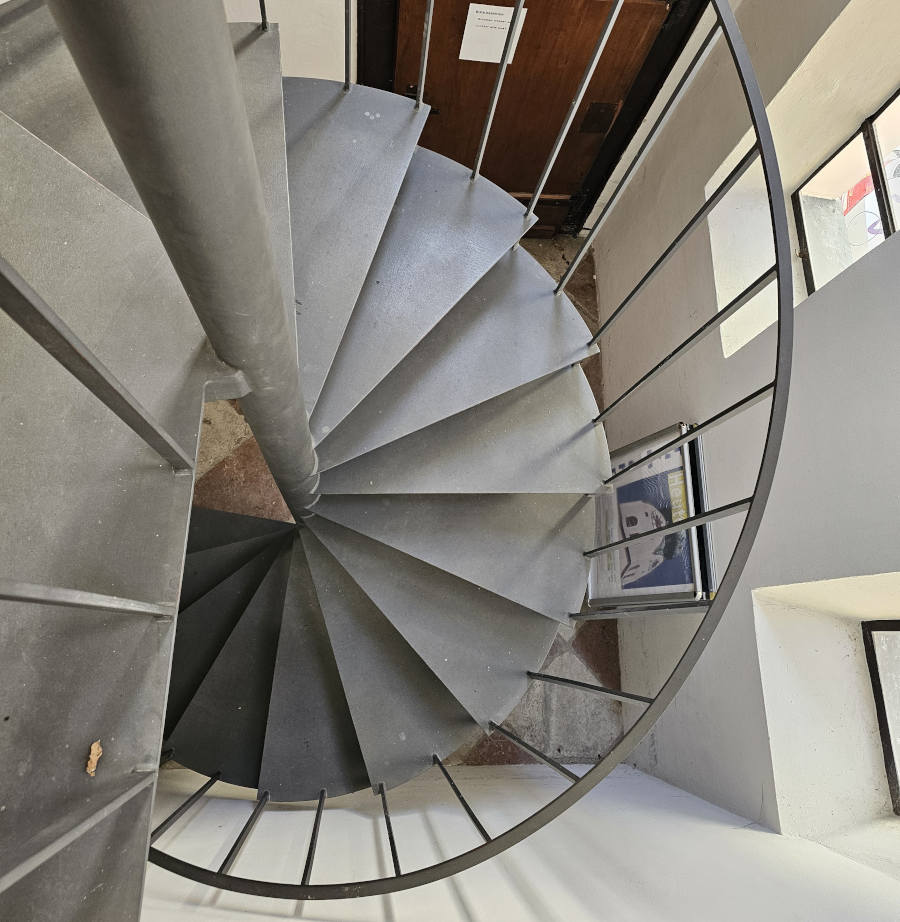
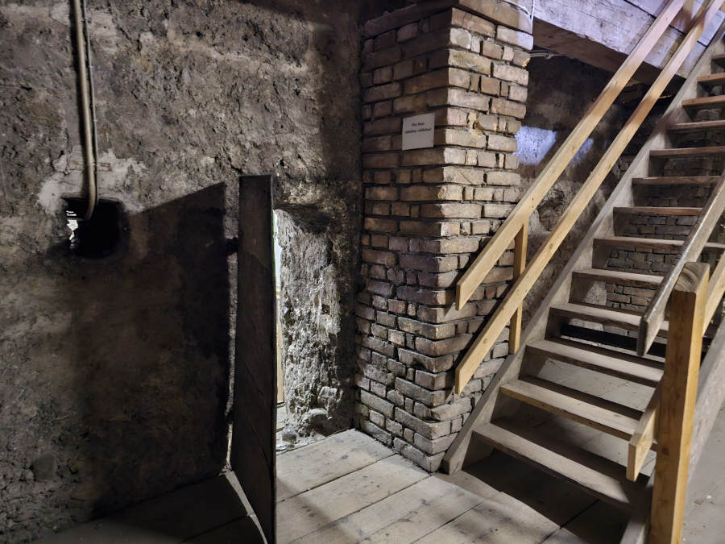
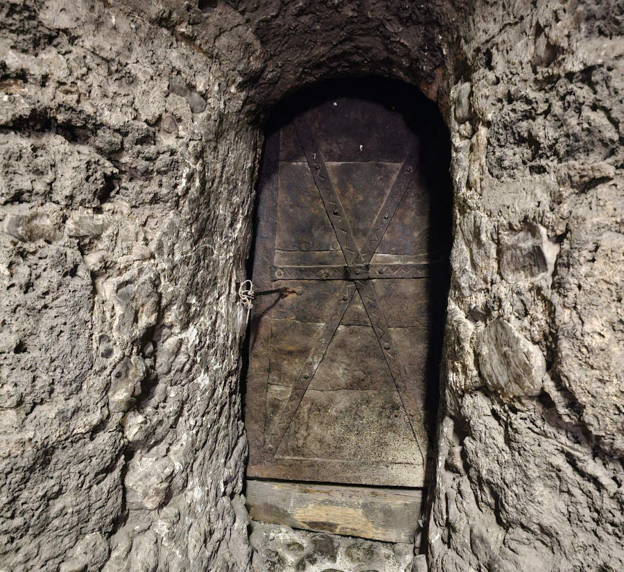
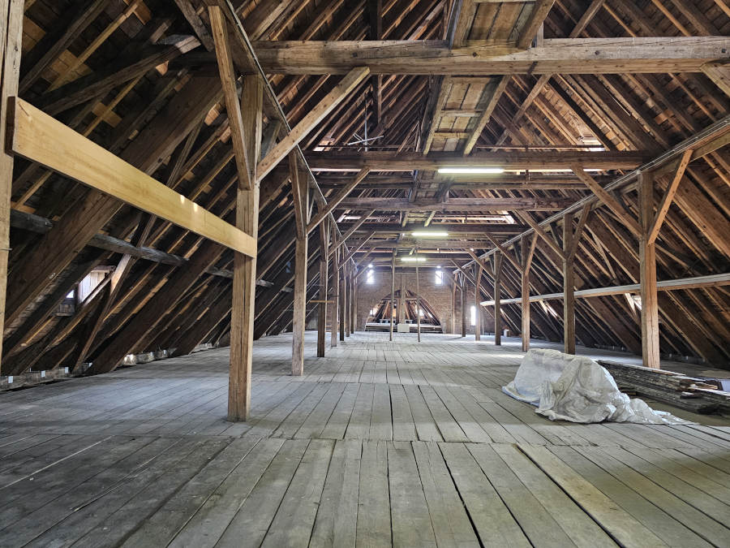
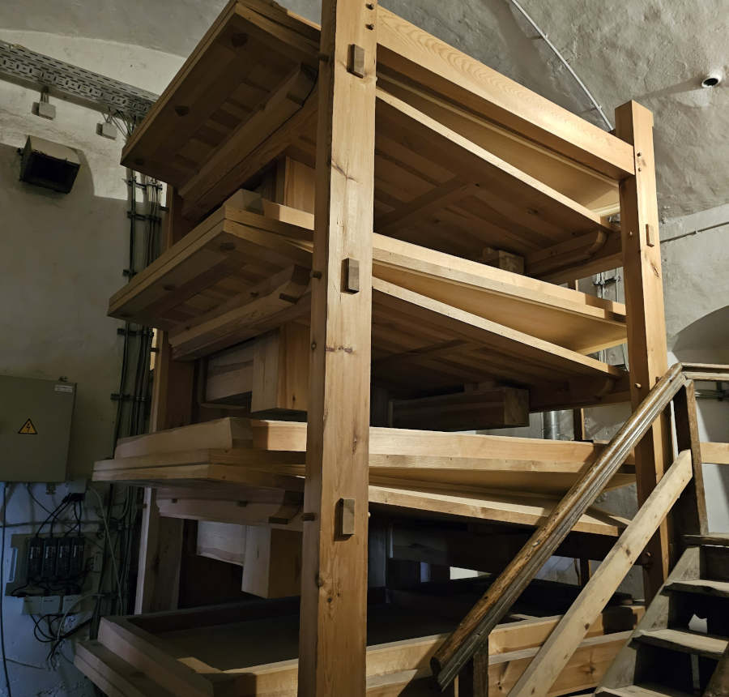
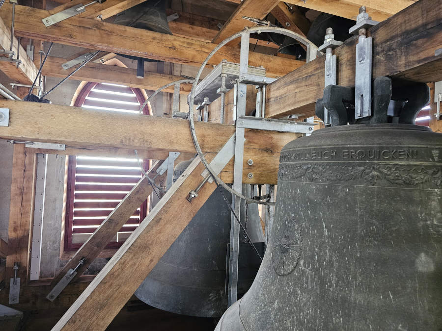
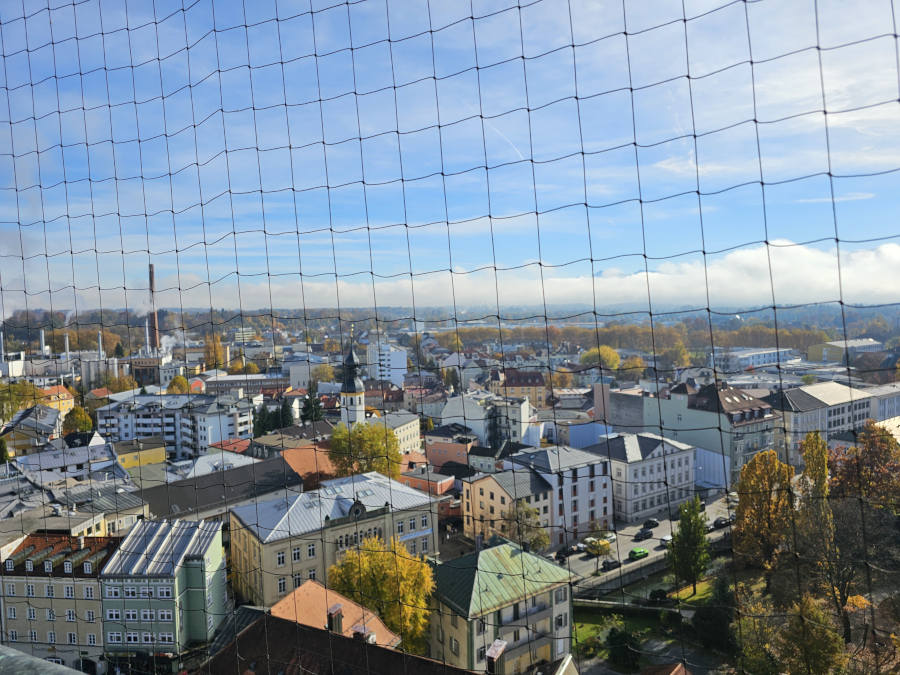
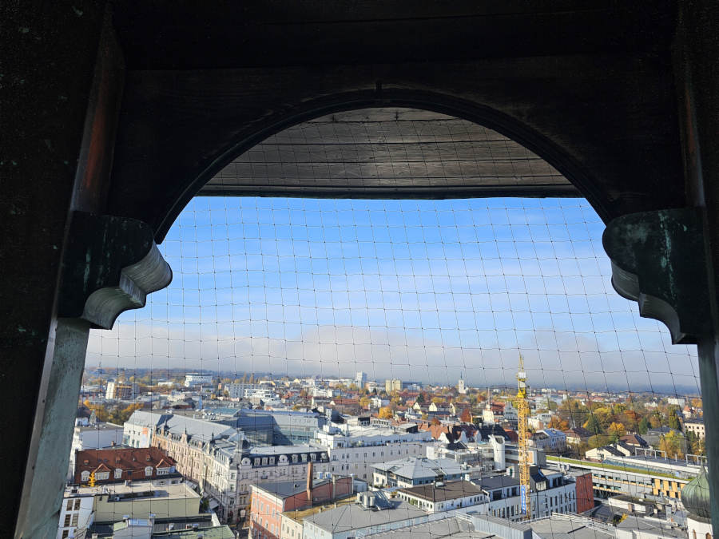

The tower tour provides an exciting climbing experience through different floors to reach the top floor, which is the top of the tower.
The tower consists of 10 floors. Different floors will provide different experiences.
The journey starts with classic twisted metal stairs. But as we move upwards, we see the wooden stairs.
Wooden stairs are a mixture of older wood and newer wood as a result of recent renovations.
The transition to the wooden stairs is mainly due to reducing the overall weight of the tower.

Early sections include classic metal stairs.

Wooden stairs appear higher up as part of renovations.
Narrow stairs and symbolism
On the lower floors (2–4) the stairs are wider. The higher we go, the stairs become narrower.
If we look carefully at the symbols, it is not random. The narrow stairs are reminiscent of the Biblical verse:
“Enter through the narrow gate.” (Matthew 7:13). Als the ancient cast iron door from the 1300s gives us almost the same reminder.

Along the way: historic elements that connect you to earlier centuries.

Timber engineering in the attic area.
Top Floors: Attractions on the upper floors
As we keep climbing, we will experience attractions at different floors: the baselbalgs, the dachboden, the bells,
and eventually the top view. Modern technologies have been implemented to ensure visitor safety, including a modern
fire-fighting system. A modern air purifier technology is also visible which is used to purify the air after church rituals which generates smoke.

Baselbalg: the wooden blower that supplies air for the organ.

The wooden bell frame provides flexibility and protects the tower.
The top view of the city of Rosenheim and the open air of the 10th story truly feels like a reward.
The hard work through the final stair suggests that one must earn the prize. The top part of the tower provides clean fresh air and
nearly a 360 degree view of the city of Rosenheim. This is one of the major attractions.

On a clear day, the nearby alps are visible which creates a beautiful experience.

Top view of Rosenheim and the fresh air feels like a reward after the climbing experience.
The early church builders were highly intelligent people. Their skills have been handed down through the work of elders.
Although the church has been renovated multiple times, the next generation builders respectfully followed the practices of the elders.
This is something truly worthy to be experienced first hand.
Want to experience it in person? Book a guided tower tour.
Available only from Easter Sunday to the end of October.